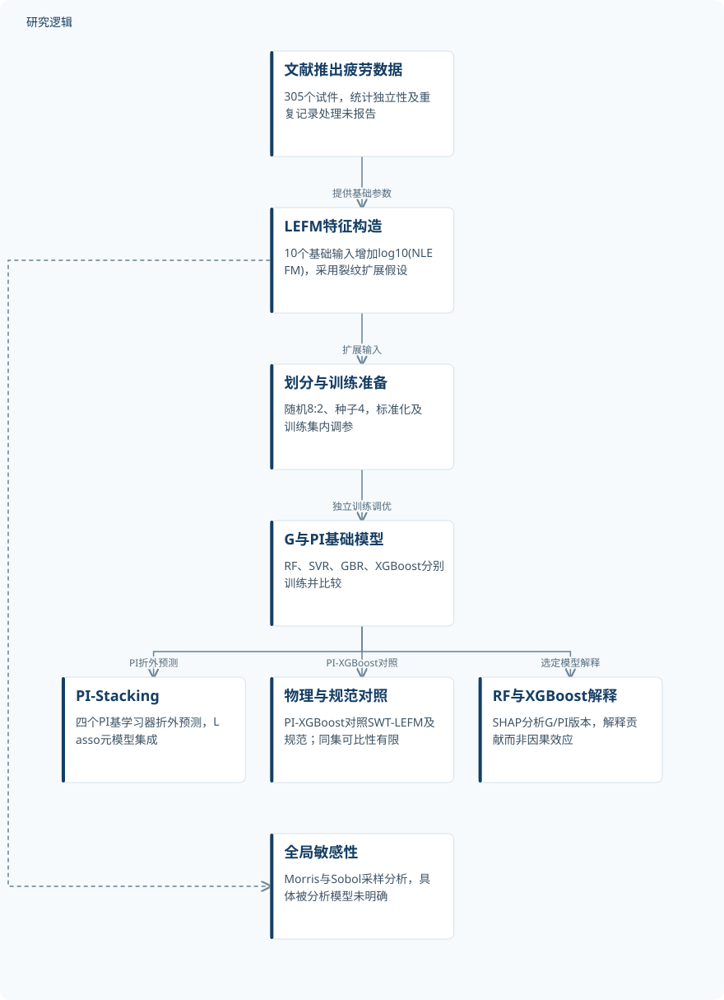
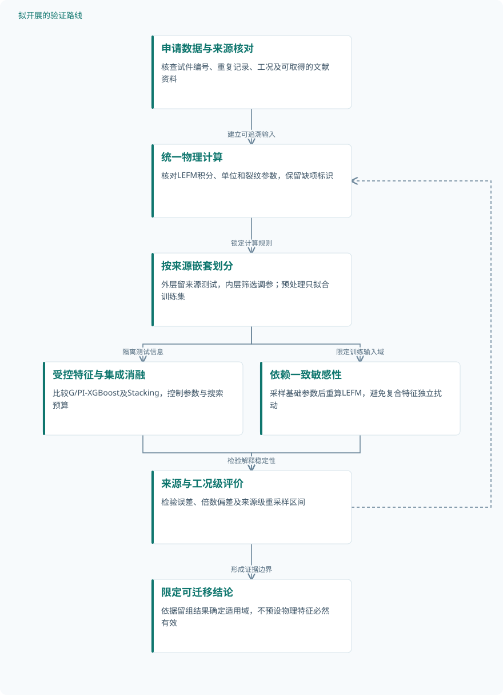

论文精读
面向钢—混凝土组合结构栓钉疲劳寿命预测的物理信息堆叠集成机器学习
Physics-informed stacking ensemble machine learning for fatigue life prediction of stud connectors in steel-concrete composite structures
精读更新 2026-10-04 22:01 · 依据论文全文整理
栓钉疲劳失效会削弱钢—混凝土组合结构的组合作用，而相同应力范围下的寿命离散，又使经验曲线难以满足精细化评估需求。Tan等将断裂力学寿命估计转化为机器学习特征，再通过Stacking融合多个预测器，取得较好的测试集表现。本文的阅读价值不仅在于预测指标，更在于辨清物理特征、集成增益与工程安全裕度之间的边界，为后续疲劳可靠性研究寻找可验证的切入点。
文章目录
从保守设计曲线走向多参数寿命评估
栓钉承担钢梁与混凝土之间的剪力传递，其疲劳寿命同时受到材料、几何和加载条件影响。作者指出，既有经验模型依赖有限试验，难以充分表达这些因素的耦合作用；常规机器学习则面临物理解释与不确定性分析不足的问题。
规范曲线与数据驱动模型的任务并不完全相同：前者包含安全裕度，后者主要追求预测误差较小。Eurocode 4采用lgN均值减去两倍标准差的设计曲线，因此，寿命低估不能直接判为模型失效；真正面向工程应用，还需同时考察精度与安全保证水平。
把LEFM寿命变成第十一个输入
研究汇集文献中的305个推出疲劳试验试件，涵盖常规及高性能材料，但不能直接视为305个统计独立样本。模型使用混凝土强度、栓钉尺寸、钢材强度、抗剪承载力及四项剪应力参数等10个基础输入，以log(Nexp)为目标；RFE-CV采用500棵树的RF和10折验证，最终保留全部基础输入。
物理信息通过特征工程进入模型，而非损失函数硬约束。作者依据式(6)的Nf=∫[a0至af]da/[C(ΔK)^m]计算LEFM寿命，将log10(NLEFM)作为第11个特征；其适用性依赖裂纹扩展、有效剪切面积及根部纯剪失效等假设。
RF、SVR、GBR和XGBoost分别建立普通与物理信息版本，四个基学习器通过折外预测形成元特征，再由Lasso完成Stacking。输入采用Z-score标准化，数据按8:2随机划分，种子为4，调参仅在训练集进行；标准化统计量的拟合范围和Stacking折数仍未明确。
原研究：物理特征集成与分对象验证


Stacking用于集成预测；规范与SWT-LEFM对照连接PI-XGBoost，SHAP连接实际解释的RF和XGBoost。敏感性分析的具体模型未明确。
下载 SVG图示关系说明
实线表示相邻阶段的信息流，虚线表示跨阶段联系或反馈。
文献推出疲劳数据 → LEFM特征构造：提供基础参数；LEFM特征构造 → 划分与训练准备：扩展输入；划分与训练准备 → G与PI基础模型：独立训练调优；G与PI基础模型 → PI-Stacking：PI折外预测；G与PI基础模型 → 物理与规范对照：PI-XGBoost对照；G与PI基础模型 → RF与XGBoost解释：选定模型解释；LEFM特征构造 → 全局敏感性：输入域采样
随机测试支持精度改善，跨来源验证仍待补齐
机器学习验证建立在汇集的实物试验数据上，未报告新增试验、数据增强数量及独立试件核查结果。研究比较四种算法的G/PI版本和PI-Stacking，使用R²、MAE、MAPE、RMSE及倍数误差带；没有报告来源隔离测试、外部验证或固定超参数下的完整消融。
PI-XGBoost的调参比较采用100次迭代和多次重复10折验证：GP平均耗时209.3 s、最优RMSE为0.436，TPE为90.4 s和0.446。作者选择TPE继续调优，证据支持其在该设置下更省时，但不支持其误差也更低；重复次数与差异区间未报告。
物理对照另用推出试验有限元模型计算SWT-LEFM寿命，并以荷载—滑移曲线校准模型，仿真及验证试件数量未报告。SWT-LEFM试件并非全部属于机器学习测试集；规范对照的数据对应关系则未报告，两者均不能无条件视为严格同集比较。
| 验证任务 | 样本与规模 | 主要结果 |
|---|---|---|
| 普通、物理信息与Stacking模型的寿命预测比较 | 共305个试件；统计独立数量、去重结果及新增试验、仿真和增强数量未报告，不从比例反推测试数量。 | 表8：PI-Stacking的RMSE/MAE/MAPE/R²为0.33/0.24/4.48%/0.83，PI-XGBoost为0.33/0.25/4.61%/0.82。 |
| PI-XGBoost的GP与TPE调参效率比较 | 两种方法各设置100次优化迭代，并采用多次重复10折验证；迭代数不是样本数，重复次数未报告。 | GP耗时209.3 s、RMSE为0.436；TPE耗时90.4 s、RMSE为0.446，作者据优化表现选择TPE。 |
| 有限元支持的SWT-LEFM及规范寿命对照 | 物理对照独立试件数、有限元模型数和规范对照统计分母未报告；四分之一模型不代表样本数量。 | SL1/SL2的RMSE为0.68/0.69、R²为0.14/0.12；AASHTO、JSCE、Eurocode 4存活率为82.67%、65.33%、52.33%。 |
| SHAP解释与Morris、Sobol全局敏感性分析 | SHAP解释及背景样本数量、Morris轨迹数、Sobol采样数量和模型调用次数均未报告。 | 图22的PI-XGBoost中Δτ/物理特征为20.0%/14.5%；Sobol排序为Δτ、ft、fc、物理特征，精确指数未报告。 |
展开数据来源、分组、对照与验证边界
普通、物理信息与Stacking模型的寿命预测比较
数据来源。汇集自1960年以来文献[24–49]的推出疲劳试验，覆盖常规与高性能材料；数据按请求提供。
分组与工况。比较RF、SVR、GBR、XGBoost的G/PI版本及PI-Stacking；具体材料、几何和加载工况组数量未报告。
数据划分。随机8:2训练—测试划分，种子4；训练集内调参及折外Stacking。绝对数量、来源分组和Stacking折数未报告。
对照与消融。同算法G/PI版本及单个PI模型构成对照；未报告固定相同超参数、逐项物理特征及元学习器消融。
评价指标。R²、MAE、MAPE、RMSE及±3×、±4×误差带；目标为对数寿命，对数底数和误差带严格定义未明确。
验证边界。正文与图表存在指标差异；未报告外部测试和增益置信区间，同源泄漏风险及小幅改善稳定性无法核验。
PI-XGBoost的GP与TPE调参效率比较
数据来源。使用305个试件数据库的训练子集，输入附加log10(NLEFM)；训练子集绝对记录数未报告。
分组与工况。GP与TPE均优化PI-XGBoost的7个超参数；正文报告搜索范围及最优参数，没有独立工况分组。
数据划分。调优仅在随机8:2划分后的训练集内执行；种子4，采用重复10折交叉验证，不属于外部测试。
对照与消融。GP与TPE互为搜索策略对照；固定参数、网格搜索及随机搜索的定量对照未报告。
评价指标。最优训练集交叉验证平均RMSE及平均计算时间；RMSE对应对数目标，不能按循环次数解释。
验证边界。未报告重复次数、耗时离散程度及误差区间；结果体现时间与误差的权衡，而非TPE全面占优。
有限元支持的SWT-LEFM及规范寿命对照
数据来源。SWT-LEFM使用文献[38,39,43,45,49,69]的推出试件；规范对照数据的逐条对应关系未报告。
分组与工况。SL1取ΔK=Kmax，SL2取Kmax−Kmin；规范为AASHTO、JSCE、Eurocode 4，并比较不同应力范围。
数据划分。SWT-LEFM试件并非全部属于机器学习测试集；规范对照与机器学习数据的对应关系未报告。
对照与消融。PI-XGBoost对照两种SWT-LEFM约定及三种规范；有限元先以引用试验荷载—滑移曲线验证和校准。
评价指标。物理对照采用RMSE、MAE、MAPE、R²；规范报告存活率。图示log(Npre)/log(Nexp)理想值为1。
验证边界。不能确认严格同集对照；存活率公式、有限元校准误差未报告，规范安全裕度不能与点预测精度混同。
SHAP解释与Morris、Sobol全局敏感性分析
数据来源。SHAP比较G/PI的RF和XGBoost；全局分析在观测边界内归一化并假定均匀分布，具体模型未明确。
分组与工况。解释比较四种模型的输入贡献；全局分析涉及11个输入，独立工况分组及分组数量未报告。
数据划分。解释样本所属训练或测试集合未报告；敏感性分析属于输入采样传播，不等于独立实物验证。
对照与消融。G/PI模型作解释对照，Morris与Sobol作敏感性互证；未报告解释排序的重复采样稳定性对照。
评价指标。Pearson相关、SHAP贡献及相对重要性；Morris均值μ和标准差σ，Sobol一阶S1和总阶ST。
验证边界。SHAP排序跨正文与图示冲突；输入相关性和复合特征依赖处理未报告，重要性不能直接解释为因果作用。
小幅集成增益之外，更重要的是安全边界
按表8，PI-Stacking测试集RMSE为0.33、MAE为0.24、MAPE为4.48%、R²为0.83，PI-XGBoost对应为0.33、0.25、4.61%、0.82。正文另报后者RMSE为0.34，图13的Stacking MAE也与表8不同；因此小幅增益尚缺稳定性证据，且不能将对数目标误差解释为cycles误差或原始寿命相对误差。
SHAP解释的是模型贡献，不是因果效应：图22中PI-XGBoost的Δτ和log(NLEFM)重要性为20.0%和14.5%，后文又称物理特征最高，存在排序冲突。Sobol则将Δτ、ft、fc和物理特征依次列为前四位；其均匀分布采样及复合特征依赖处理尚不足以代表实际工况不确定性。
复现还有两处关键障碍：表中LEFM积分与式(6)形式不一致，Vu标准差719.3 kN也与所列范围明显不协调。数据声明为按请求提供；PI-XGBoost虽报告平均误差2.940%，却未内置安全裕度，现阶段更适合作为预测工具，不能直接替代疲劳设计准则。
从这篇论文走向下一项研究
以下为结合研究方向提出的候选方案，实验设计与预期目标有待验证。
来源隔离与依赖一致的物理特征检验
问题与短板。随机划分尚不能证明跨试验来源泛化，LEFM特征又与应力参数高度相关。建议优先检验增益是否来自可迁移机制，而非同源记录相似性及重复信息。
改进机制。先统一式(6)与表中积分、单位和裂纹参数，再按文献来源建立嵌套交叉验证。每折仅用训练数据拟合标准化和筛选过程，敏感性采样时由基础参数重算物理特征。
候选创新。将来源隔离、物理特征受控消融与依赖一致敏感性分析组合为审计流程。相关混凝土强度Stacking文献摘要已报告折外训练和约束技术，本路线不主张这些技术本身新颖。
数据与实验设计。建议设计：申请原文305个试件记录，结合可取得的公开文献核对来源、试件编号与工况。按来源留组测试，另分常规与高强材料；若去重后来源过少，明确缩小验证范围。
对照与消融。对照G-XGBoost、PI-XGBoost和PI-Stacking，并设置固定参数与同预算重新调参两组消融。比较移除LEFM、仅用LEFM及依赖一致与独立均匀采样，分离特征和调参贡献。
成功判据。以来源留组的对数RMSE、原始寿命倍数误差及分组偏差为判据。建议要求改善的来源级重采样区间不跨零，且高应力与高强材料组无持续恶化，而非只追求总体排名。
风险与替代方案。来源标签不足、裂纹参数缺失及强相关输入可能使贡献不可辨识。替代方案是先完成可追溯子集验证，对缺失参数做区间分析，并将来源不足的结论限定为内部预测。
从平均寿命预测走向校准的疲劳安全下界
问题与短板。较低平均误差不等于较高安全保证，原研究也明确PI-XGBoost未内置安全裕度。建议建立可检验的寿命下界，避免直接把点预测用于检修或设计决策。
改进机制。在来源隔离的训练流程上增加分位数预测，并用独立校准集修正下界覆盖率。将疲劳寿命离散与模型预测不确定性分别报告，不把输入均匀扰动产生的范围当作全部风险。
候选创新。已有混凝土强度Stacking摘要报告分位数区间，栓钉强度退化研究摘要采用贝叶斯估计与可靠性评估。候选贡献是面向栓钉寿命下界的组合与校准，而非宣称区间预测首次提出。
数据与实验设计。建议设计：申请原试验数据并按来源分为训练、校准和测试集合，比例随可用来源数确定。需要新增采集时，可建议24个独立试件覆盖两档应力幅与两档材料，每组6个，并先评估试验资源。
对照与消融。同集比较点预测、分位数模型、校准下界与规范曲线，消融物理特征和校准步骤。规范保留其设计安全属性，分别评价寿命误差、安全覆盖及下界保守程度。
成功判据。建议预先设定90%寿命下界覆盖目标，同时报告覆盖率区间和下界紧致程度。要求总体与关键工况组均无明显欠覆盖，并以完全留出的来源检验是否仍有工程可用性。
风险与替代方案。小样本下分组覆盖难以稳定估计，来源迁移也可能破坏校准条件。替代路径是扩大区间、保留规范控制并标识域外输入；微裂纹检测仅在具备可行采集条件后作为补充研究。
后续路线一：检验物理增益能否跨来源迁移


拟议流程，不代表已完成实验。先核对数据与公式，再以来源隔离和受控消融检验泛化，并处理复合特征的参数依赖。
下载 SVG图示关系说明
实线表示相邻阶段的信息流，虚线表示跨阶段联系或反馈。
申请数据与来源核对 → 统一物理计算：建立可追溯输入；统一物理计算 → 按来源嵌套划分：锁定计算规则；按来源嵌套划分 → 受控特征与集成消融：隔离测试信息；按来源嵌套划分 → 依赖一致敏感性：限定训练输入域；受控特征与集成消融 → 来源与工况级评价：提交留组预测；依赖一致敏感性 → 来源与工况级评价：检验解释稳定性；来源与工况级评价 → 限定可迁移结论：形成证据边界；来源与工况级评价 → 统一物理计算：反馈公式异常